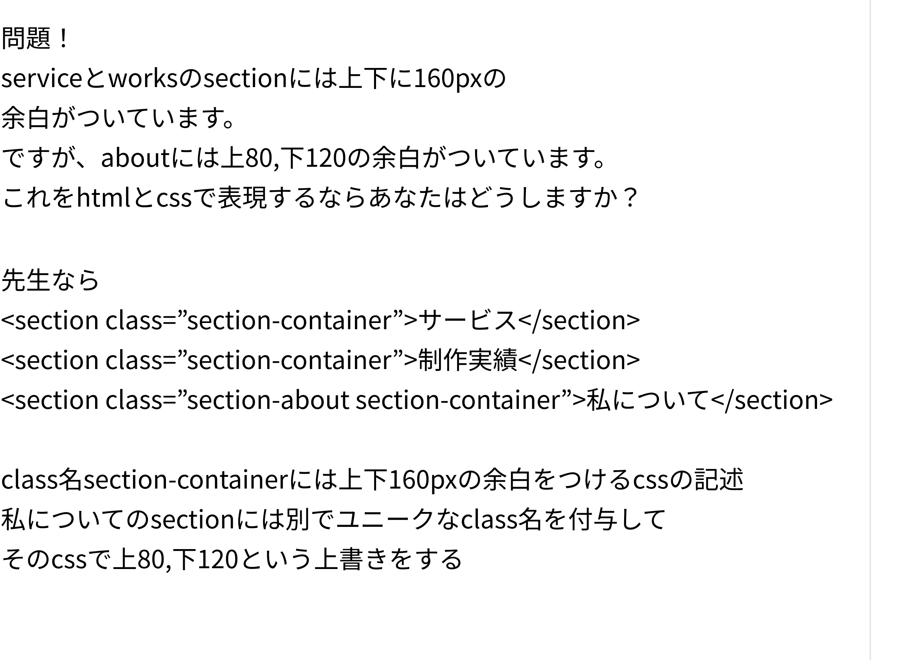

訓練校｜全6時間の集中授業
時刻をクリックすると、その内容の詳しい解説に飛べます。★★★＝特に重要。
※録画は約1時間48分（ワークス〜アバウト〜仕上げ）。3時間目以降は制作時間のため録画停止。
カードのタグ（グラフィック/ウェブ/UI）をバリアントで切り替え、文言はテキストプロパティで。
バリアントは下に増える。大枠のコンポーネントにオートレイアウトを横付けすると横並びにできる。
カードもタグもコンポーネント化すると、カードの外から中のタグも切り替えられる新機能。
グリッドのオートレイアウトは中身が 1FR で伸びて扱いづらい。横並び2列の方が楽。
コンテナ＝意味的に囲う／ラッパー＝とりあえず囲う。名前で役割を示す。
円などの形で画像を切り抜いて表示。プロフィールアイコンに使う（マスクグループ）。
Figmaの幅はあくまで目安。コーディングで width:480px と固定すると小さい画面で破綻する。
section-containerで共通の余白、section-aboutでそこだけ上書き。
idは優先度が強すぎて上書きしづらい。JS連携・ページ内リンクなど限定的に使う。
「サイズの自動調整」で余分な余白を消し、「範囲の色」でスタイル抜け（ただの黒）を点検。
昨日作ったワークスアイテム（カード）の続き（教科書124p〜）。カードには「グラフィックデザイン」などのタグが付く。この作り方には2通りある。
今回は②で作成。グラフィック／ウェブ／UIデザインの3パターンをバリアントで用意。どちらが正解でもなく、使い回し方しだい。
2時間目に、先生が休憩中に調べてくれたもっと効率の良い作り方。教科書が書かれた頃にはなかった、ここ1年ほどで使えるようになった機能。
これを使うと、カードのインスタンスの外側から、中に入っているタグのバリアントを直接切り替えられる。テキストプロパティ（プロジェクト名）とネストされたタグ切り替えが、カード1つの右パネルでまとめて操作できる。
→ メリット：カードもタグも別々に使い回せて、管理が細かくできる。今日は「こういう機能がある」という紹介まで。
1FR 扱いになって勝手に伸びる。横並び（フレックス）2列にした方が作りやすい（コーディングではグリッドでもOK）。ワークスラッパー でまとめ、さらに ワークス セクションで囲んで上下160・幅1440。ボタン（View More）も配置（136p）。アバウトセクション（教科書138p〜）。プロフィールの丸いアイコンはマスクで作る（139p）。
⌘ + [ ]（Ctrl+[ ]）で1段ずつ前後に移動、[ ] だけで最前面・最背面へ。
アバウトのタイトル（32 Regular）と説明文（16 Regular）。説明文のテキストボックス幅を480pxにした。ここで超重要なコーディングの注意。
480と書いてあるからといって、それを信じちゃいけない。実際にコーディングする時、この説明文（Pタグ）に width: 480px と絶対指定はしません。── A先生
width:480px と絶対指定すると、画面幅が小さいデバイスで横スクロールが生まれる。実際は幅を指定せず、ブレイクポイントでカラム落ちさせたり、%（相対指定）で画面に合わせて折り返す。Figmaの数字はあくまで目安。
今日いちばんの山場。サービス・ワークスのセクション余白は上下160px。でもアバウトだけ上80／下120。この「ほとんど同じ、でも1つだけ違う」をHTML/CSSでどう書くか。

<section class="section-container">サービス</section> <section class="section-container">制作実績</section> <section class="section-about section-container">私について</section>
.section-container { /* 共通：全セクション */ padding: 160px 0; margin: 0 auto; /* 左右の共通設定もここ */ } .section-about { /* アバウトだけ上書き */ padding-top: 80px; padding-bottom: 120px; }
section-about だけ書けばコンピュータ的には動くが、あえて section-container も併記する。こうすると人が見て「これは共通のセクションだな」「ここだけ何か上書きしてるな」と分かる。コードは対コンピュータでなく対人間（チーム）で書く。
「id と class、2つ並べる書き方とどう違う？」という質問への回答。
| 属性 | 性質と使いどころ |
|---|---|
| class | 基本はこっちで管理。何個でも付けられて上書きしやすい |
| id | CSSの優先度（詳細度）が強すぎて上書きしづらい＝管理が難しくなる。使うのは JSと絡める時／意図的に優先度を上げたい時／ページ内リンクなど限定的な理由がある場合 |
つまり、普段の見た目の管理はクラスでやるのが基本。idは特別な理由があるときだけ。
トップPC フレームを選んで「サイズの自動調整」（148p）→ 余分が消える。#000のままの黒）がないか点検し、登録したブラックスタイルを当て直す。レイヤー名・重なり順も整理。| 用語 | 意味（このクラスでの理解） |
|---|---|
| ネストされたインスタンス | コンポーネントの中に入れたインスタンスのバリアントを、外側から切り替えられる機能（比較的新しい） |
| ラッパー / コンテナ | どちらも囲うもの。ラッパー＝とりあえず包む／コンテナ＝意味的に囲う |
| マスク / マスクグループ | ある形で画像を切り抜き表示する機能／その結果できるレイヤー |
| レイヤー移動ショートカット | ⌘+[ ]＝1段前後／[ ]＝最前面・最背面 |
| 絶対指定 / 相対指定 | px固定（絶対）／%など画面幅に応じる（相対）。本文幅は相対が基本 |
| ブレイクポイント | 画面幅で表示を切り替える境目。カラム落ちなどに使う |
| section-container（共通クラス） | 全セクション共通の余白などをまとめるクラス |
| ユニークなクラス | 被らない・重複しない名前。1か所だけ上書きする用（例 section-about） |
| class / id | 基本はclassで管理／idは優先度が強く限定用途（JS・ページ内リンク等） |
| 優先度（詳細度） | CSSでどのセレクターが勝つか。idはclassより強い |
| サイズの自動調整 | フレームの余分な余白を中身に合わせて消す機能（教科書148p） |
| 範囲の色 | 選択した要素の中で使われている色一覧。スタイル抜けの点検に使う |
ポートフォリオを完成まで仕上げる。3時間目以降は各自の制作時間だった。
section-container＋section-aboutで上書き」と書けるイメージを持つ480と書いてあるからといって、それを信じちゃいけない。Figmaの数字はあくまで目安です。── 絶対指定をしない
コンピュータだけだったら、これはいらないんです。でもコーディングはチームでやるから、他の人が見ても分かるように書く。── 共通クラスを併記する理由
ユニークって日常だと「おもろい」みたいなイメージかもしれないけど、実際は「被らない」の意味の方が強いです。── ユニークなクラス名
制作順に不正解はないです。ラフを書いて上から順でも、部品から作るのでも、どちらもアリ。── デザインを組む順番